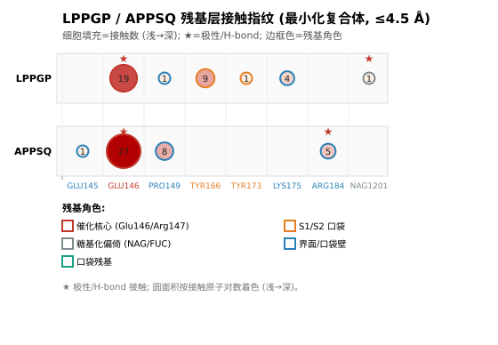
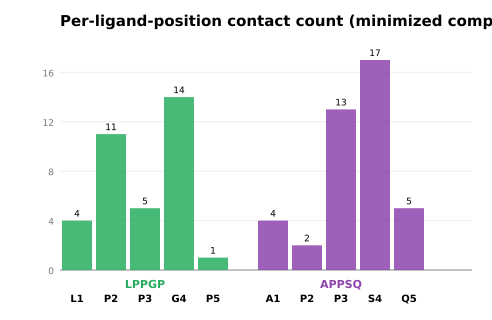

Fig.1. Residue-level contact fingerprint (minimized-complex geometry). Each column is a receptor
residue that contacts either peptide, sorted by residue number; the upper/lower lanes are LPPGP and APPSQ
respectively. Circle area ∝ number of contacting atom pairs (same color shading); ★ marks polar/H-bond contacts;
border color = the residue's role in the DPP4 pocket (red = catalytic core Glu146/Arg147, orange = S1/S2 pocket,
gray = glycan bias, blue = interface / pocket wall).

Fig.2. Per-ligand-position contact count. Horizontal axis = the peptide's 5 residue positions
(letter + index); bar height = number of pocket-contacting atom pairs at that position.
LPPGP contacts concentrate at Gly4 + Pro2; APPSQ concentrates at Ser4 + Pro3, with a broader footprint.
Contact criteria: total contact ≤4.5 Å; hydrophobic (both carbons) ≤4.0 Å;
polar/H-bond (both O/N) ≤3.5 Å. Geometry from the MMFF94s-relaxed complex (consistent with §3.6/§3.7).